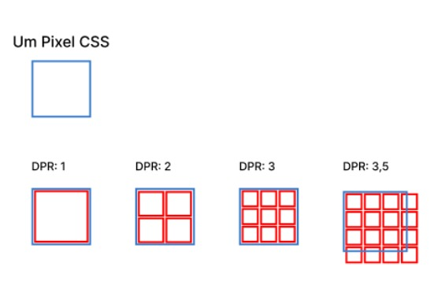

Pixels (px)
O pixel é uma unidade de medida absoluta, utilizada para definir o tamanho de elementos de forma
consistente, independentemente de outros fatores. Embora chamada de "pixel", em CSS representa um
pixel de referência que o navegador converte para o pixel físico da tela.
Um pixel é
a menor unidade que compõe uma imagem digital, sendo um pequeno ponto ou quadrado que representa uma
cor específica.

Milhares ou milhões de pixels, dispostos numa grade, formam as imagens que vemos em
telas de computadores, televisores e smartphones, com uma maior quantidade de pixels resultando numa
imagem mais detalhada e de maior qualidade. Um pixel físico (hardware) é basicamente
um ponto de luz na tela enquanto um pixel CSS (software) refere-se a uma unidade de medida absoluta.
O fabricante de um dispositivo determina quantos pixels físicos equivalem a um pixel de software.
DPR--- ou Device Pixel Ratio (Proporção de Pixels do Dispositivo), é a razão entre os pixels físicos de uma tela e os pixels lógicos (ou CSS) que os navegadores web usam para renderizar o conteúdo. Ele indica quantos pixels físicos são necessários para representar um único pixel lógico, sendo fundamental para que o conteúdo apareça nítido em telas modernas com alta densidade de pixels.